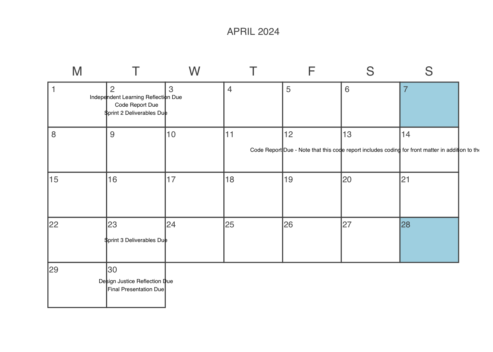

Schedule
Acknowledgements
Styling and infrastructure for this page inspired by related syllabi produced by Ben Baumer and R. Jordan Crouser.
Tip
All readings for this course will be available in our course Perusall, which is linked in Moodle. I encourage you to complete the readings there so that you can leave comments and questions as they come up.
Calendar View for Major Assignments
January 27, 2025
Introductions to Course and Project
Course slides are here.
January 29, 2025
February 03, 2025
Team Formation, Team-Building, and Data Management Planning
SDS 238 Students (2025). User Manuals. Read in Perusall
Get started on Infrastrucutre Set-up (3)
February 05, 2025
Introduction to Interviewing and Qualitative Data Analysis
Grad Coach (2022). Qualitative Coding Tutorial: How To Code Qualitative Data For Analysis (4 Steps + Examples). (Visited on Jan. 24, 2025). Read in Perusall
Infrastrucutre Set-up Due (3)
Get started on Proposal Component 1 (4)
Course slides are here
February 10, 2025
GitHub Workshop
February 12, 2025
Interview with Project Stakeholders
Chapter 1 , Costanza-Chock, Sasha (2020). Design Justice: Community-Led Practices to Build the Worlds We Need. Erscheinungsort nicht ermittelbar: The MIT Press. ISBN: 978-0-262-04345-8. Read in Perusall
Proposal Component 1 Due (4)
Don’t forget to complete the self-assessment form!
Get started on Proposal Component 2
Interviewing Tips
Interview Note-taking Sheet
February 17, 2025
Design Paradigms and Stakeholder Analysis
Warning: smithStakeholderAnalysisPivotal2000: unknown macro '\textbar'Smith, Larry (2000). “Stakeholder Analysis: Pivotal Practice to Project Success PMI”. In: Project Management Institute Annual Seminars & Symposium. Houston, TX. Newtown Square, PA: Project Management Institute. (Visited on Jan. 08, 2025). Read in Perusall
Continue working on Proposal Component 2 & Get started on Proposal Component 3
Course slides are here
February 19, 2025
Prep for Coding Procedure
Chapter 2 , Costanza-Chock, Sasha (2020). Design Justice: Community-Led Practices to Build the Worlds We Need. Erscheinungsort nicht ermittelbar: The MIT Press. ISBN: 978-0-262-04345-8. Read in Perusall
Proposal Component 2 Due (4)
Don’t forget to complete the self-assessment form!
Continue working on Proposal Component 3
Get started on Code Report
February 24, 2025
Brainstorming and Tasking
Schwaber, Ken and Jeff Sutherland (2020). The SCRUM Guide - The Definitive Guide to Scrum: The Rules of the Game. Read in Perusall
Proposal Component 3 Due (4)
Don’t forget to complete the self-assessment form!
Continue working on Code Report
February 26, 2025
Proposal Reviewing and Integration
SDS 238 Students (2025). Proposals. Read in Perusall
Get started on user stories
Continue working on Code Report
March 03, 2025
Planning for Sprint 1
Three User Stories in Project Backlog Due (4)
Don’t forget to complete the self-assessment form!
Code Report Due (4)
March 05, 2025
Sprint 1
Get started on Code Report
March 10, 2025
Sprint 1
Get started on Independent Learning Reflection
Continue working on Code Report
March 12, 2025
Retro
Sprint 1 Deliverables Due (5)
Independent Learning Reflection Due (4)
Continue working on Code Report
March 17, 2025
Spring Break
Code Report Due (4)
March 19, 2025
Spring Break
March 24, 2025
Planning for Sprint 2
Get started on Code Report
March 26, 2025
Sprint 2
Chapter 3 , Costanza-Chock, Sasha (2020). Design Justice: Community-Led Practices to Build the Worlds We Need. Erscheinungsort nicht ermittelbar: The MIT Press. ISBN: 978-0-262-04345-8. Read in Perusall
Continue working on Code Report
March 31, 2025
Sprint 2
Get started on Collaboration Reflection
Continue working on Code Report
April 02, 2025
Retro
Chapter 4 , Costanza-Chock, Sasha (2020). Design Justice: Community-Led Practices to Build the Worlds We Need. Erscheinungsort nicht ermittelbar: The MIT Press. ISBN: 978-0-262-04345-8. Read in Perusall
Sprint 2 Deliverables Due (5)
Collaboration Reflection Due (4)
Code Report Due (4)
April 07, 2025
Revisiting Aims
April 09, 2025
Reviewing Community Feedback and Adjusting
Chapter 5 , Costanza-Chock, Sasha (2020). Design Justice: Community-Led Practices to Build the Worlds We Need. Erscheinungsort nicht ermittelbar: The MIT Press. ISBN: 978-0-262-04345-8. Read in Perusall
Mid-Design Assessment Due (4)
April 14, 2025
Planning for Sprint 3
April 16, 2025
Sprint 3
Conclusion , Costanza-Chock, Sasha (2020). Design Justice: Community-Led Practices to Build the Worlds We Need. Erscheinungsort nicht ermittelbar: The MIT Press. ISBN: 978-0-262-04345-8. Read in Perusall
Project Documentation Due (4)
April 21, 2025
Sprint 3
April 23, 2025
Retro
Sprint 3 Deliverables Due (5)
April 28, 2025
Prepping for Final Presentation
Get started on Design Justice Reflection
April 30, 2025
Presentation to Community Organization
Final Presentation Due (5)
Design Justice Reflection Due (4)